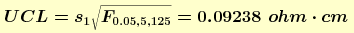

2.6. Case studies
2.6.2. Check standard for resistivity measurements
2.6.2.2. |
Analysis and interpretation |
with K(J - 1) = 125 degrees of freedom. The level-2 standard deviation is computed from the daily averages to be
with K - 1 = 24 degrees of freedom.


-
UCL = Average + 2*s2 = 97.1234
ohm.cm
Centerline = Average = 97.0698 ohm.cm
LCL = Average - 2*s2 = 97.0162 ohm.cm
- No evidence of bias, change or drift in the measurement process.
- No evidence of long-term lack of control.